البحث عن الفوتونات المظلمة باستخدام هالوسكوب عازل متعدد الطبقات
مزود بديود انهيار جليدي أحادي الفوتون
الملخص
نقدّم نتائج البحث عن الفوتونات المظلمة ذات كتلة تقارب باستخدام هالوسكوب عازل متعدد الطبقات مزود بحساس ضوئي ميسور التكلفة ومتاح تجاريًا. وتتكون الرزمة متعددة الطبقات، التي تتيح تحويل الفوتونات المظلمة (DP) إلى فوتونات النموذج المعياري، من 23 طبقات ثنائية من أغشية رقيقة متناوبة من SiO2 وSi3N4، بسماكات تزداد خطيًا عبر الرزمة (وهو ترتيب يعرف باسم “الرزمة المتدرجة السماكات”). وقد اختيرت السماكات وفق خوارزمية تحسين بهدف تعظيم تحويل الفوتونات المظلمة إلى فوتونات في منطقة الطاقة التي تبلغ فيها حساسية الحساس الضوئي ذروتها. صُممت هذه التجربة النموذجية، التي سمّاها مؤلفو هذه الورقة MuDHI (Multilayer Dielectric Haloscope Investigation)، وطُورت وشُغلت في مختبر الفيزياء الفلكية الجسيمية في New York University Abu Dhabi، وهو ما يمثل أول تشغيل لتجربة مادة مظلمة في الشرق الأوسط.
لم يُرصد أي فائض ذي دلالة في الإشارة، واستخدمت طريقة اللوغاريتم الأعظم لدالة الاحتمال لوضع حدود استبعاد عند مستوى ثقة 90% على ثابت اقتران المزج الحركي بين الفوتونات المظلمة والفوتونات العادية.
I المقدمة
توجد أدلة قوية على أن نحو 85% من محتوى المادة في الكون يتكون من المادة المظلمة (DM)، وهي نوع جديد من الجسيمات يتجاوز النموذج المعياري ولم يُكتشف بعد [1]. وعلى الرغم من أن مرشحات مثل الجسيمات الضخمة ضعيفة التفاعل (WIMPs) كانت الهدف الرئيس لتجارب المادة المظلمة خلال العقود الماضية [18, 8]، فإن جسيمات جديدة مثل الأكسيونات والفوتونات المظلمة تكتسب اهتمامًا متزايدًا.
نبحث في هذا العمل عن مادة مظلمة ذات كتلة تقارب على هيئة فوتونات مظلمة (DPs)، وهي جسيمات مفترضة تنتمي إلى ما يسمى القطاع المظلم (وسمي مظلمًا لأنها متعادلة تحت تفاعلات النموذج المعياري). وعلى الرغم من أن وجود المادة المظلمة مدفوع باقترانها الثقالي مع النموذج المعياري، فإن معظم التجارب الباحثة عن المادة المظلمة تفعل ذلك استنادًا إلى تفاعلها الضعيف المفترض. وبالمثل، يُفترض أن كشف الفوتونات المظلمة قابل للتحقق تجريبيًا بسبب التفاعل بين النموذج المعياري والقطاع المظلم عبر بوابة متجهة. وفي البوابة المتجهة، يكون التفاعل ممكنًا بفعل المزج الحركي بين بوزون مظلم واحد، هو الفوتون المظلم الناشئ من تناظر U(1) إضافي، وبوزون عادي واحد يؤخذ على أنه فوتون النموذج المعياري لمجموعة القياس U(1) في الكهرومغناطيسية [28]. ويؤدي المزج الحركي إلى تذبذبات بين الفوتون المظلم والفوتون، على نحو شبيه جدًا بما يحدث بين كتل النيوترينو وحالات النكهة الذاتية. إن لاغرانجيان الفوتون المظلم ذي الحقل المتجهي وموتر الفوتون المظلم في أساس الانتشار (أي أساس الكتلة) هو [9, 28, 5, 33]
| (1) | ||||
حيث إن هو موتر الحقل الكهرومغناطيسي، و هو ثابت اقتران المزج، و هي كتلة الفوتون المظلم، و هي الشحنة الكهربائية، و هو متجه كثافة التيار، و هو الجهد الرباعي الكهرومغناطيسي. لاحظ أننا في المعادلة 1 أخذنا فقط الحدود من الرتبة الرائدة في . وللتعبير الكامل انظر، على سبيل المثال، المرجع [21].
تستفيد التقنية التي نستخدمها لكشف الفوتونات المظلمة من رزمة من طبقات عازلة متناوبة ومن مستقبل. ويطلق على هذا النوع من الكواشف اسم “هالوسكوب عازل” (أو ببساطة “هالوسكوب”)، وقد استُخدم للبحث عن الأكسيونات في مجال كتل 40– [20, 46] (عند اقترانه بحقل مغناطيسي خارجي)، واقتُرح لكشف الفوتونات المظلمة في مجال الكتل 0.1– [15].
لا نرصد فائضًا في البيانات، ونضع قيودًا على ثابت اقتران المزج الحركي بين الفوتونات المظلمة والفوتونات العادية عند مستوى ثقة 90% (CL) في منطقة الكتلة محل الدراسة. ونفعل ذلك باستخدام هالوسكوب عازل متعدد الطبقات مزود بحساس ضوئي ميسور التكلفة ومتاح تجاريًا. المواد المستخدمة لرزمة الطبقات الثنائية وعددها 23 هي SiO2 وSi3N4. ونستكشف تحديات تصنيع رزمة عازلة ذات عدد كبير من الطبقات وتوصيفها وتشغيلها. تُستخدم عدسة لا كروية لتركيز القدرة المنبعثة على ديود انهيار جليدي أحادي الفوتون (SPAD).
صُمم هذا الكاشف النموذجي وطُور وشُغل في New York University Abu Dhabi، وهو ما يمثل أيضًا أول تشغيل لتجربة مادة مظلمة في الشرق الأوسط. وقد سُميت تجربة إثبات المبدأ هذه MuDHI (Multilayer Dielectric Haloscope Investigation)–وفي العربية تعني كلمة mudhì11
1
تُنطق
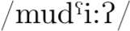
تُنظم الورقة على النحو الآتي: في القسم II نقدم لمحة عامة عن تصميم التجربة؛ وفي القسم III نشرح النظرية الكامنة وراء تحويل الفوتونات المظلمة إلى فوتونات عادية؛ وفي القسم IV نصف بالتفصيل إعدادنا التجريبي المحدد؛ وفي القسم V نعرض نتائج التجربة؛ وأخيرًا نوجز ونستنتج في القسم VI. ويمكن إعادة إنتاج جميع الرسوم المنشأة لهذه المقالة باستخدام الشيفرة المتاحة في https://github.com/arneodoslab/haloscope.git.
II تصميم التجربة
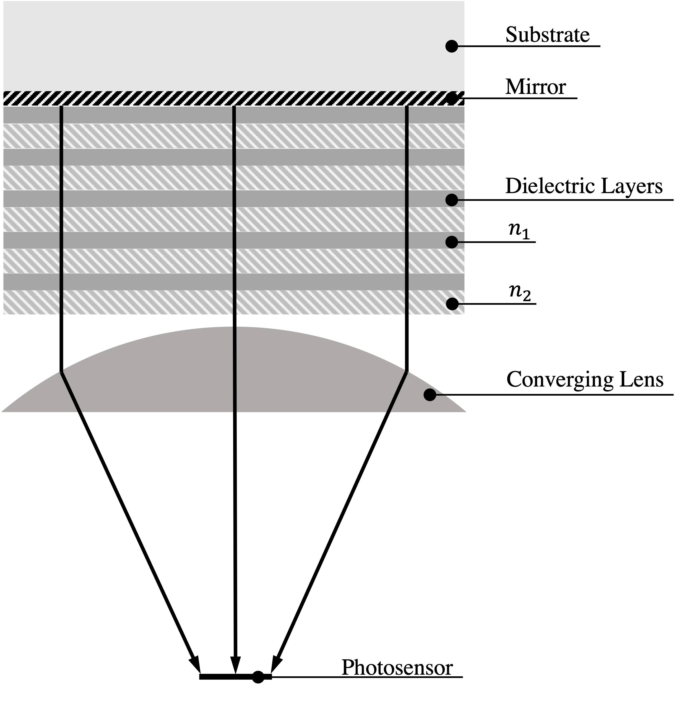
يتكون الهالوسكوب، الموضح تخطيطيًا في الشكل 1، من ثلاثة أجزاء رئيسة: الرزمة، التي تتيح التحويل من الفوتونات المظلمة إلى الفوتونات، والعدسة، التي تركز الفوتونات المحولة، والحساس الضوئي. تصميم الهالوسكوب عملية هندسة عكسية، إذ إن أول مكوّن يُختار ليس الرزمة بل الحساس الضوئي، الذي سيحدد تردد كفاءة الكشف المثلى. ويجب أن يكون هذا الحساس قادرًا على كشف الفوتون المفرد، وأن يملك مساحة فعالة صغيرة (قابلة للمقارنة مع حجم البقعة عند البؤرة)، ومعدل عدّات مظلمة منخفضًا جدًا وكفاءة كشف عالية. كما يجب أن يضمن تشغيلًا مستقرًا لعدة ساعات.
نظرًا إلى المتطلبات المذكورة أعلاه، وقع اختيارنا على ديودات الانهيار الجليدي أحادية الفوتون، SPADs (المزيد في القسم IV.2). بحثنا عن SPAD تبلغ كفاءة كشفه الضوئي ذروتها حول ، أي نحو ، إذ يقابل ذلك مجال كتل للفوتونات المظلمة غير مستكشف بما يكفي في فضاء المعلمات (لاحظ أنه في المزج الحركي بين الفوتون المظلم والفوتون تتحول كتلة السكون للفوتون المظلم بالكامل إلى طاقة الفوتون). في البداية استخدمنا نسخة معدلة بقطر من Hamamatsu S12426-02 Si APD [30]. وعلى الرغم من أن Hamamatsu لم تكن لديها خبرة في تقييم هذا الحساس في نمط غايغر، فقد كانت الشركة مستعدة لتوفير عينتين صُنعتا خصيصًا لاحتياجاتنا. وكانت كفاءة الحساسات الكمومية (أي احتمال أن يولد فوتون ساقط زوج إلكترون-فجوة في الحجم الحساس من الحساس) تبلغ ذروتها عند . وبالتوازي، تحققنا من توافر مادتين عازلتين بمعاملي انكسار منخفض وعال على التوالي، تكونان شفافتين عند الطول الموجي محل الاهتمام، ومن تقنية متاحة تجاريًا تسمح بترسيبهما (انظر القسم III.1 لمزيد من التفاصيل). اخترنا SiO2 وSi3N4، اللذين يمكن ترسيبهما في طبقات رقيقة باستخدام عملية تسمى الترسيب الكيميائي بالبخار المعزز بالبلازما (PECVD) [12, 55, 44]. وأخيرًا اختيرت سماكات الطبقات الثنائية للرزمة بحيث تبلغ عملية التحويل من الفوتون المظلم إلى الفوتون العادي، بوصفها دالة في الكتلة، ذروتها حيث تتعاظم QE لحساس Hamamatsu SPAD. ولسوء الحظ، اتضح أثناء توصيف الحساس الضوئي أنه لا يعمل عملًا صحيحًا عند تشغيله في نمط غايغر. وبناءً على ذلك، وعلى الرغم من أن الرزمة كانت قد صُنعت بالفعل وفق منحنى QE الخاص بـ Hamamatsu، اضطررنا إلى الانتقال إلى حساس ضوئي آخر. اختبرنا أولًا الهالوسكوب باستخدام SPAD من Laser Components (النموذج SAP500)، لكنه، بالرغم من انخفاض معدل العدّات المظلمة فيه، لم يكن قابلًا للتشغيل المستقر عند تبريده (إذ لم تسمح خلية Peltier التي أضفناها إلى الإعداد لتبريد SPAD بدرجة حرارة تشغيل ثابتة). وفي نهاية المطاف، كان الحساس الضوئي المستخدم في اختبارنا النهائي هو C30902SH-TC من Excelitas مع مبرد كهروحراري (TEC) أحادي المرحلة (-TC) مدمج لتحسين أداء الضجيج عند درجات حرارة أخفض، ومساحة فعالة بقطر ، وقيمة عظمى لـ PDE عند .
للعثور على العدسة المناسبة، التي يجب أن تكون شفافة للطول الموجي المختار، أجرينا محاكاة GEANT4 (انظر الملحق C)، ثم قارنا النتائج بالخيارات المتاحة تجاريًا. في القسم التالي، نعرض الفيزياء الكامنة وراء مبدأ عمل الهالوسكوب العازل.
III تحويل الفوتونات المظلمة في الهالوسكوبات العازلة
لاستكشاف مزج الفوتونات المظلمة والفوتونات المرئية، يمكننا إعادة كتابة اللاغرانجيان في المعادلة (1) ضمن أساس التفاعل في حد الصغير
| (2) |
في كتابة ذلك، استخدمنا حقيقة أنه عند صغير جدًا يمكننا ببساطة إجراء الاستبدال بينما . ولمعالجة أكثر تفصيلًا، انظر على سبيل المثال المرجع [29]. وبما أن أساسي الانتشار والتفاعل متميزان، فإن حالة الفوتون المظلم المنتشرة تكون مزيجًا من حالتي تفاعل الفوتون المظلم وفوتون النموذج المعياري. ويعني ذلك أن الفوتون المظلم يمتلك حقلًا كهربائيًا صغيرًا .
نظرًا إلى الوفرة الباقية الحالية للمادة المظلمة، قد لا يكون عدد الإشغال كبيرًا لكتل الفوتون المظلم العالية ()، ولذلك ينبغي اعتماد مقاربة مكمّمة لدراسة التذبذب بين الفوتونات المظلمة والفوتونات العادية. غير أنه، وفق المراجع [53, 36]، تظل طريقة الحقل الكلاسيكي (ونعني بـ “الحقل الكلاسيكي” قيمة توقع الحقل بعد التطور وعند القياس) صالحة إذا كان الاهتمام مقتصرًا على معدل التحويل المتوسط بين الفوتون المظلم وفوتون النموذج المعياري، لا على التصحيحات الكمومية ذات الرتب الأعلى. وسنعتمد هنا طريقة الحقل الكلاسيكي.
من حيث المبدأ يمكن أن يكون حقل الفوتون المظلم معقدًا، ذا بنية وسرعات واتجاهات غير تافهة. ويمكن التقاط هذه التعقيدات عبر تحويل فورييه (مثلًا المراجع [41, 29])، لكن من أجل التبسيط، سنعد الفوتون المظلم عند نقطة زمنية معينة في الكاشف موصوفًا بموجة مستوية ذات زخم صفري، ونحل للحالات الذاتية المنتشرة. وبما أننا نتعامل مع أوساط عازلة، يمكننا إعادة كتابة الشحنات المقيدة الموجودة في ضمن معامل الانكسار للمادة، ووفق الوصفة في المرجع [38] يمكننا كتابة معادلات الحركة في الأوساط لحقلي الفوتون المظلم والفوتون
| (11) |
حيث أهملنا الحدود من رتبة واستخدمنا حقيقة أن سرعة الفوتون المظلم صغيرة ()22 2 تُفترض الوحدات الطبيعية في هذا العمل كله ما لم يذكر خلاف ذلك. لاختيار مقياس يحقق [37]. بحل الحالات الذاتية المنتشرة، التي تقابل حالة منتشرة شبيهة بالفوتون المظلم وحالة شبيهة بالفوتون، نحصل على
| (12e) | ||||
| (12j) | ||||
حيث
| (13) |
هي زاوية المزج الحركي الفعالة في الأوساط. وللحالة المنتشرة الشبيهة بالفوتون المظلم كثافة طاقة مناظرة (أي كثافة المادة المظلمة المحلية) معطاة بـ
| (14) |
يمكننا الآن كتابة الحقل المستحث بالحالة الشبيهة بالفوتون المظلم33 3 لا يسهم في الحقل الكهرومغناطيسي إلا مكوّن تفاعل الفوتون في الحالة المنتشرة الشبيهة بالفوتون المظلم. في وسط لانهائي، ، وهو معطى بـ
| (15) |
يمكن مقارنة هذه المعادلة بالحالة الأكثر دراسة في الهالوسكوبات العازلة، وهي الأكسيون ، الذي، لكتلة واقتران في حقل مغناطيسي خارجي ، يعطى بـ
| (16) |
وخلافًا لحالة الأكسيون، يمكن للحقول المستحثة بالفوتون المظلم أن تتجه في أي اتجاه، وقد يكون للاستقطاب في الواقع بنية كونية غير تافهة [10, 21].
III.1 الرزمة العازلة متعددة الطبقات
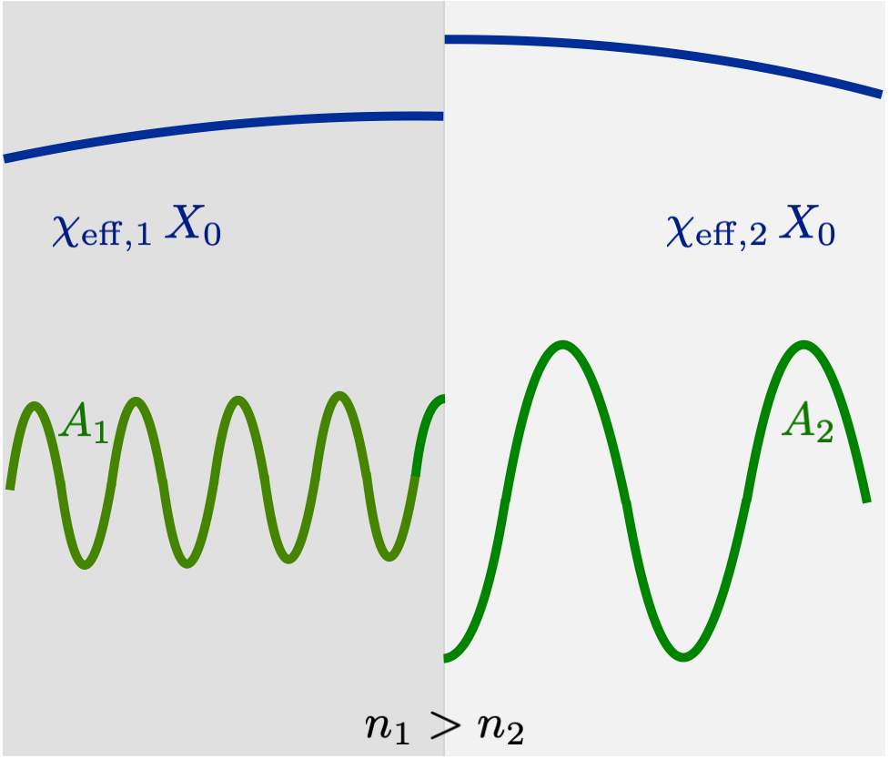
على الرغم من أن حالة شبيهة بالفوتون المظلم غير نسبوية ومنتشرة يمكن أن تولد حقلًا صغيرًا في وسط لانهائي، فإنها لا تستطيع التحول إلى حالة منتشرة شبيهة بالفوتون فائقة النسبية بسبب حفظ الزخم. ومن الاستثناءات المهمة عندما يطابق تردد البلازما لمادة ما، كما في هالوسكوبات البلازما [43, 29]. وبدلًا من ذلك، يمكن مزج الفوتون مع أكسيون شبه جسيمي لتوفير حالة شبيهة بالفوتون ذات كتلة [47, 54]. غير أنه إذا كُسر تناظر الانتقال، مثلًا بوجود تغير في الوسط، فيمكن توليد حالات حقيقية منتشرة شبيهة بالفوتون [34]. ولإظهار هذا الأثر، نتبع الحساب في المرجع [38].
لننظر في نظام يتكون من وسطين متجانسين ومتناظري الخواص ونصفي لانهائيين، بمعاملي انكسار و، ويقع السطح الفاصل عند كما هو موضح في الشكل 2. إذا كانت الحالة المنتشرة الشبيهة بالفوتون المظلم وحدها موجودة، فسيكون لدينا حقل كهربائي غير مستمر عبر الحد لأن يتغير. غير أن معادلات Maxwell تفرض شروط الحد
| (17a) | ||||
| (17b) | ||||
وبعبارة أخرى، يجب حفظ مركبتي الحقلين و الموازيين عند السطح الفاصل. وبسبب ذلك، لا بد أيضًا من توليد حالات منتشرة شبيهة بالفوتون بغية استيفاء شروط الحد. ويمكننا حل الحقول بالسماح بموجة متحركة إلى اليسار في الوسط 1 وموجة متحركة إلى اليمين في الوسط 2، بسعتين و على التوالي. ويمكننا كتابة الحقول في الوسط 1 على الصورة
| (18) |
والحقول في الوسط 2 على الصورة
| (19) |
وللتبسيط نهمل سرعة الفوتون المظلم، غير أن كونها غير صفرية سيجعل موجات الفوتون المتولدة غير عمودية تمامًا على السطح الفاصل، مانحًا عادة زاوية فتح مقدارها [37]. وباستخدام شروط الحد في المعادلة (17) يمكننا عندئذ حل و لنحصل على [38]:
| (20a) | ||||
| (20b) | ||||
حيث . ونرى أنه بالنسبة إلى فوتون مظلم ذي استقطاب عمودي على السطح الفاصل لا يحدث أي تحويل.
وبما أن الأدبيات مالَت إلى التركيز على الأكسيونات لا على الفوتونات المظلمة، فمن المفيد مقارنة التعابير أعلاه بالحقول التي يولدها أكسيون عندما يكون موازيًا للسطح الفاصل [50]
| (21a) | ||||
| (21b) | ||||
البنية متماثلة تمامًا، باستثناء استقطاب الفوتون المظلم المجهول. ولتحويل سعات الحسابين يمكن إجراء هذا الاستبدال البسيط
| (22) |
حيث و هي الزاوية بين الاستقطاب ومستوى السطح الفاصل (أي الزاوية المتممة بين الاستقطاب والمتجه العمودي على السطح). في الحد البسيط لانتقال من مرآة إلى فراغ، نعيد إنتاج تجربة هوائي الطبق [34]. فعلى سبيل المثال، إذا أخذنا و فإن فيض الحالة المنتشرة الشبيهة بالفوتون، ، يعطى بـ
| (23) |
حيث . وتبقى أيضًا الطاقة المخزنة في مكوّن الحقل من حالة الانتشار الشبيهة بالفوتون المظلم [50]. غير أن حالات الانتشار الشبيهة بالفوتون المظلم لا تنحني في الوسط كما تفعل الحالات الشبيهة بالفوتون، ولذلك لا تركزها العدسة، ومن ثم ينبغي أن تكون مهملة عند الكاشف الضوئي.
أحد عيوب مقاربة هوائي الطبق هو أن الجهاز، على الرغم من أنه يعمل عبر مجال واسع جدًا من الترددات، غير محسّن لأي تردد بعينه. وكما أُشير في المرجع [38, 50]، يمكن فعليًا تعزيز تحويل الفوتون المظلم إلى فوتونات بوجود طبقات كثيرة مرتبة لتحقيق تداخل بنّاء: أي هالوسكوب عازل متعدد الطبقات. وعلى الرغم من أن المقترح الأصلي كان يتضمن أقراصًا عازلة متحركة لتسهيل مسح فضاء الترددات، فإن وجود مجموعة من الأغشية الرقيقة أكثر عملية عند الترددات العالية [15]. وفي حين لا يمكن المسح بتغيير سماكات الطبقات، يمكن إما ترتيب رزم كبيرة ذات طبقات كثيرة لتغطية فضاءات تردد أوسع، أو تبديل الرزم للبحث في فضاء معلمات مختلف.
يمكن وصف مثل هذا النظام إما كلاسيكيًا باستخدام مصفوفات النقل [50]، أو باستخدام تكامل تراكب يُشتق بسهولة من مقاربة نظرية الحقل الكمومي [36]. وما دمنا نهتم فقط بقيمة التوقع لمعدل التحويل، فإن كلا الحسابين يعطيان الجواب النهائي نفسه [36]. وفي كلتا الحالتين، يشار عادة إلى التعزيز الناتج عن التداخل البنّاء باسم “عامل التعزيز”، معرّفًا بحيث يرتبط الفيض الخارج من هالوسكوب عازل بفيض هوائي الطبق عبر
| (24) |
ولحساب عامل التعزيز نستخدم صياغة مصفوفة النقل أحادية البعد المطورة في المرجع [50].
من حيث المبدأ، يمكن للحجم المحدود للجهاز مع السرعة غير الصفرية للفوتون المظلم أن يؤديا إلى انحرافات عن الصياغة أحادية البعد. وقد يحدث ذلك بطريقتين. فالسرعات المستعرضة للفوتون المظلم بالنسبة إلى السطوح الفاصلة تؤدي إلى انبعاث فوتونات من الرزمة بزاوية صغيرة (أي غير عمودية على السطح)، إضافة إلى إزاحة ترددية من رتبة [49]. وبالمثل، فإن الحجم المحدود للطبقات يكسر أيضًا تناظر الانتقال على مستوى الرزمة ويوفر بعض الزخم المستعرض للأقراص. غير أن الطبقات أعرض بكثير من طول موجة de Broglie، وما دامت الطبقات ملساء (أي مسطحة عبر السطح عند مستوى مماثل لخطأ سماكات الطبقات) فإن هذا الأثر سيكون دون السائد. والأثر الثاني المحتمل لسرعة محدودة للفوتون المظلم هو تغير في الطور عندما يمر الفوتون المظلم عبر طبقات الرزمة المختلفة. غير أن مثل هذه الآثار لا تصبح مهمة إلا عندما يكون طول الرزمة من طول موجة de Broglie للفوتون المظلم [49]. ولكي يؤثر هذا الأثر في إعدادنا، ينبغي أن يتكون من مئات الطبقات.
III.2 المعدل المتوقع وعامل التعزيز
لتقدير المعدل المتوقع لهالوسكوب عازل معين، يمكننا إعادة كتابة المعادلة (24) بصورة أكثر صراحة لنرى
| (25) |
حيث هي مساحة الرزمة. ولزيادة الإشارة، يجب إما زيادة أو زيادة عامل التعزيز. وبما أن هذا الفيض يجب كشفه فوق بعض العدّات الخلفية، يمكن أيضًا زيادة نسبة الإشارة إلى الضجيج باستخدام حساس ضوئي ذي معدل عدّات مظلمة أخفض، وهو ما يؤدي دورًا كبيرًا في اختيار تقنية الكاشف الضوئي وتردد التشغيل معًا. ويمكن كتابة نسبة الإشارة إلى الضجيج خلال فترة زمنية على النحو [16, 17]
| (26) |
حيث و هما عدّا الإشارة والخلفية خلال الزمن . وفي المتوسط يمكن تقدير العدّات من معدل عد الإشارة ومعدل العدّات المظلمة عبر و. ومن ثم نرى أن دلالة القياس تزداد مثل ، ولذلك تتحقق فائدة من جعل قياس الإشارة (ويشار إليه أيضًا في هذا التقرير باسم “قياس التشغيل”) ممتدًا لمدة طويلة.
لعل أقل المعلمات بداهة في الضبط هو عامل التعزيز. ففي حين تؤدي زيادة زمن القياس والمساحة إلى زيادة مباشرة في الإشارة المتوقعة، لا يمكن تحقيق التداخل البنّاء إلا ضمن مجال محدود من الترددات. وعلى وجه الخصوص، لوحظ في المرجع [50] أن
| (27) |
حيث هو عدد الطبقات. وبعبارة أخرى، عند عدد ثابت من الطبقات لا يمكن تحقيق زيادة في إلا بالتضحية بعرض مجال الترددات الذي يمكن ضمنه تمكين تحويل الفوتون المظلم إلى فوتون. علاوة على ذلك، تمتلك عوامل التعزيز الكبيرة عمومًا حساسية عالية مقابلة للأخطاء، لأنها تتطلب إما سلوكًا رنينيًا أكبر أو طبقات كثيرة مصطفة كلها لتحقيق تداخل بنّاء [50]. وعلى أي حال، فبينما يمكن من حيث المبدأ زيادة على حساب مجال ترددي مغطى أضيق، فإن هذا ليس مهمة سهلة عمليًا. أولًا، بالنسبة إلى السماكات الكبيرة ( وما فوق)، قد يؤدي إجهاد انضغاطي عالٍ وحقيقة أن الترسيب يجب أن يتوقف مرتين أو أكثر للسماح بتنظيف مفاعل PECVD إلى تشقق الطبقات المترسبة. ثانيًا، مع ازدياد عدد الطبقات يصبح قياس الرزمة أصعب. وثمة اعتبار آخر ينبغي أخذه في الحسبان، وهو أن وجود أكثر من بضع مئات من الطبقات قد يؤدي إلى فقدان طور الفوتون المظلم عبر سماكة الجهاز [49].
يعتمد المعدل المتوقع أيضًا على بنية استقطاب الفوتون المظلم، كما يظهر من وجود حد في المعادلة (LABEL:eq:expectedrate). وبحسب التطور الكوني للفوتون المظلم، قد يكون من الممكن أن يكون الاستقطاب عشوائيًا أساسًا في كل رقعة اتساق، أو أن تكون له بُنى على مقاييس كبيرة، أو حتى أن يكون تقريبًا ثابتًا في كل مكان. في هذه الورقة، سننظر في الحالة البسيطة لاستقطاب عشوائي تمامًا، والتي تعطي بعد التوسيط على أزمنة اتساق كثيرة
| (28) |
ولاشتقاق المعادلة (28) انظر الملحق B. أما في الحد الأقصى المعاكس، أي عندما يكون الفوتون المظلم مستقطبًا على طول اتجاه محدد، فينبغي مثاليًا إجراء تحليل كامل يحتاج إلى استخدام معلومات اتجاهية وزمنية [21]. ومع دوران الأرض، سيتغير ، ما يعني أن الإشارة الناتجة ستكون متغيرة زمنيًا واتجاهية. ولتقدير محافظ، يمكن التعامل مع القياس على أنه لحظي واختيار زاوية بحيث تكون على الأقل من الزوايا أكبر منها. تعطي مثل هذه الإجراءات ، غير أننا نؤكد أنه مع معلومات زمنية مفصلة واستراتيجية قياس محسّنة، يمكن جعل الحساسية في سيناريو الاستقطاب الثابت قابلة للمقارنة بحالة الاستقطاب العشوائي [21].
IV الإعداد التجريبي
IV.1 رزمة متدرجة مع مرآة من 23 طبقة ثنائية SiO2/Si3N4
كما ذُكر في القسم II، تتكون الرزمة العازلة من طبقات متناوبة من SiO2 وSi3N4، حيث تملي القيود النظرية والتجريبية اختيار المواد. فمن الناحية النظرية، تبين المعادلة (20) أن تباينًا عاليًا في معامل الانكسار بين المادتين يعزز تحويل الفوتون المظلم إلى فوتون النموذج المعياري. ويمتلك ثاني أكسيد السيليكون ونتريد السيليكون معاملي انكسار 1.45 و2.02 عند على التوالي، ما يجعلهما مادتين مرشحتين مناسبتين. ومن الناحية التجريبية، من المهم أن تكون المواد المختارة شفافة في المنطقة موضع الاهتمام، أي مجال الترددات الذي يكون الحساس الضوئي حساسًا له. وقد كان حساس Hamamatsu الضوئي المختار أوليًا للتجربة ذا QE تبلغ ذروتها حول . وكل من SiO2 وSi3N4 شفاف في هذه المنطقة من الأطوال الموجية، ما يجعلهما مرشحين جيدين من هذه الناحية أيضًا [59, 39].
وثمة اعتبار أساسي آخر هو ما إذا كانت هناك تقنية قادرة على تصنيع الرزمة بالمواد المختارة وما إذا كان استخدامها ممكنًا في هذه الحالة. ولحسن الحظ، يُستخدم ثاني أكسيد السيليكون ونتريد السيليكون في تطبيقات متعددة للأنظمة الكهروميكانيكية الدقيقة والإلكترونيات الدقيقة، ولذلك فإن تقنيات الترسيب اللازمة متاحة على نطاق واسع وتجاريًا. وقد رُسبت العوازل عبر PECVD في PoliFab، Politecnico di Milano، وحصلنا من المنشأة على خمس رزم مصنعة.
ولأجل التطوير المستقبلي لهذا النموذج، قد ندرس تشغيل الإعداد بأكمله عند درجات حرارة تبريدية، ولذلك من المهم أن تكون للمواد المختارة معاملات تمدد حراري (CTE) منخفضة. وقد عزز ذلك اختيارنا لـ SiOSi3N4 بوصفهما مادتي الرزمة، إذ تمتلكان معاملي تمدد حراري قدرهما و [57] على التوالي. وإذا شغّلنا الإعداد بأكمله، بما في ذلك الرزمة، عند درجة حرارة تبريدية، فقد تكون هناك حاجة إلى دراسة مخصصة لتغير معامل الانكسار مع درجة الحرارة، وللإجهاد المستحث بمعاملات التمدد الحراري للطبقات الموضوعة فوق بعضها.
بعد اختيار المواد، يجب تحديد معلمات الرزمة الأخرى، مثل سماكات الطبقات، وعدد الطبقات، ومساحة الرزمة، وتكوين الرزمة (مع مرآة أو من دون مرآة). وفي حين كانت المساحة والسماكة الكلية للرزمة مقيدتين بقيود تجريبية، اختيرت المعلمات الأخرى باستخدام إجراء التحسين الموصوف في القسم التالي.
وكما سنرى، اتضح أن الرزمة المتدرجة المزودة بمرآة تُظهر أعلى عامل تعزيز. ولجعل الركيزة عاكسة، رسبنا طبقة Cr بسماكة (فقط لأجل التصاق Au) تلتها طبقة Au بسماكة على الركيزة تحت الرزمة العازلة. الركيزة صفيحة سيليكا منصهرة من رتبة الأشعة فوق البنفسجية بقطر ، وسماكة ، واستواء 2 وجودة سطح S/D 40/60.
IV.1.1 تحسين الرزمة
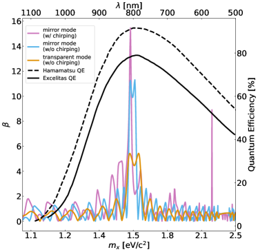
عند تحسين الرزمة لتعظيم عامل التعزيز، تكون ثلاث معلمات ذات أهمية رئيسة. أولًا، تكوين الرزمة (ذات مرآة، متدرجة السماكات، إلخ)؛ ثانيًا، سماكات الطبقات؛ وثالثًا، عدد الطبقات. والقيود الوحيدة في عملية التحسين هي المواد (المختارة مسبقًا)، والسماكة الكلية للرزمة (التي تمليها حدود آلة PECVD)، ومساحتها. والهدف من التحسين هو ضمان تعظيم طيف التعزيز حيث تبلغ حساسية الحساس الضوئي قيمتها العظمى.
في هذه النسخة، استخدمنا رزمة مزودة بمرآة لأن انعكاس الحقل على المرآة يعزز قيمة التعزيز مقارنة برزمة شفافة. كما استفاد عامل التعزيز من سماكات الطبقات الثنائية “المتدرجة”، أي إنها ضُبطت بحيث تزداد خطيًا من الطبقة الثنائية الأولى إلى الأخيرة بعامل ثابت (وكان هذا معلمة حرة في خوارزمية التحسين)، أي
| (29a) | ||||
| (29b) | ||||
حيث هو العدد الكلي للطبقات. وللمقارنة بين التكوينات المختلفة انظر الشكل 3. كما غيّرنا مرارًا جميع السماكات بمقدار صغير (استنادًا إلى توزيع غاوسي متمركز حول السماكة الاسمية للطبقة وبانحراف معياري يقارب ) من أجل تعزيز عامل التعزيز أكثر.
IV.1.2 قياس الطبقات
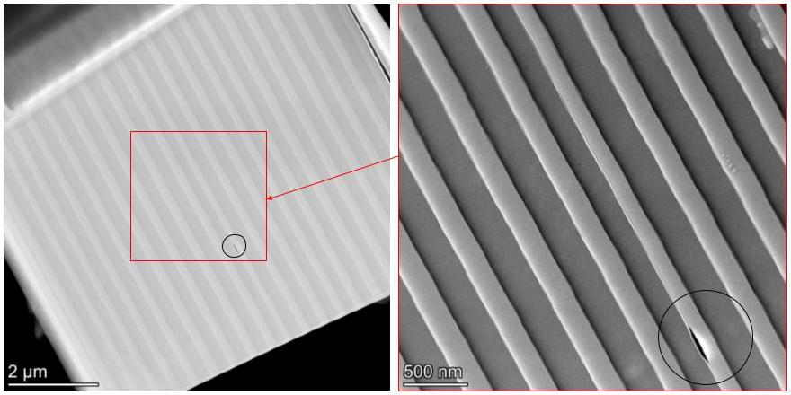
مثاليًا، يرغب المرء في قياس سماكات الطبقات الثنائية قياسًا غير إتلافي، وإحدى الطرق لتحقيق ذلك هي القياس الإهليلجي الطيفي (SE). تستطيع هذه التقنية قياس سماكة الغشاء الرقيق، ومعامل الانكسار، وخشونة السطح، وغير ذلك الكثير بصورة غير مباشرة، وذلك بقياس تغير الاستقطاب عند انعكاس الضوء عن السطح. يتيح SE الموضعي مراقبة نمو الأغشية الرقيقة آنيًا، لكن ليست كل الحجرات مجهزة بالأدوات البصرية اللازمة لإجراء هذا التحليل، وكان ذلك للأسف حال رزمنا. يمكن استخدام SE خارج الموقع لتحليل الطبقات المفردة بسهولة، لكن توصيف الرزم متعددة الطبقات يصبح أعقد. وبالنسبة إلى الرزم متعددة الطبقات، تتمثل مقاربة قياسية في قياس معامل الانكسار المركب لكل مادة من عينات مرجعية أحادية الطبقة، ثم استخدام تلك المعلومات في تحليل بيانات SE لتقييد بعض المعلمات الحرة في الملاءمة. يعمل هذا الإجراء جيدًا لرزم من 5–10 طبقات، لكنه يصبح صعبًا وغير موثوق (بسبب كثرة المعلمات المراد ملاءمتها) للرزم ذات عدد أكبر من الطبقات [31]، كما في حالتنا. لذلك اخترنا المجهر الإلكتروني النافذ (TEM)، الذي يمكننا الوصول إليه بسهولة في Analytical and Materials Characterization Core Technology Platform في NYUAD. كما أُعدت عينات TEM في NYUAD عبر إجراءات تحضير العينات بالحزمة الأيونية المركزة (FIB). قمنا بطحن عدة رقائق من رزمتيْن من الرزم الخمس المنتجة، ولحمناها إلى Omnigrid ورققناها حتى أصبحت شفافة إلكترونيًا (أقل من ). ومن بين جميع العينات المستخرجة، تبين أن أربع عينات فقط تعطي صور TEM جيدة، تنتمي اثنتان منها إلى الرزمة نفسها المستخدمة في أخذ البيانات في الهالوسكوب.
وخلافًا لطريقة SE القائمة على النموذج، توفر مقاربة TEM قياسًا مباشرًا لسماكات الأغشية. والعيب الرئيس أنها تقنية إتلافية، ومن ثم لا يمكن إجراء تحليل TEM على الرزمة الفعلية المستخدمة في الكاشف إلا بعد انتهاء التجربة. وبالمثل، يعطي TEM أيضًا توصيفًا محليًا للرزمة متعددة الطبقات، بحيث تكون هناك حاجة إلى قياسات متعددة لتوصيف الرزمة بالكامل عبر المساحة كلها. وعلى الرغم من أن هذا ممكن من حيث المبدأ، فإنه عمليًا يتطلب وقتًا وجهدًا كبيرين لاستخراج أكثر من عينات قليلة وتحليلها.
يعرض الشكل 4 صورة TEM لإحدى العينات، حيث يمكن عد 43 من أصل 46 طبقة موجودة (إذ إن ثلاثًا منها لم تُستخرج ببساطة أو لم تُرقق بما يكفي لتُرى عبر TEM). كما أجرينا تحليل أشعة سينية مشتتة للطاقة (EDAX) لكل عينة لتوصيف تركيب الطبقات، وقد بيّن وجود فصل جيد بين طبقة وأخرى من حيث التركيب الكيميائي.
وأخيرًا، برّدنا إحدى العينات إلى درجة حرارة النيتروجين السائل لمعرفة كيفية استجابة الرزمة للصدمة الحرارية. أُجري هذا القياس الأخير في ضوء التطوير المستقبلي لهذه التجربة، حيث يمكن تشغيل الهالوسكوب بالكامل في ثلاجة تخفيف بلا مواد تبريد مع حساس حافة انتقالية (TES) بوصفه كاشفًا ضوئيًا. وأظهر تحليل TEM أن الإجهاد الحراري لم يسبب أي شق مرئي في الرزمة. وهذا مطمئن أكثر نظرًا إلى أن الرزمة في الواقع ستُبرّد تدريجيًا (وإن إلى درجات حرارة أبرد بكثير)، لا على نحو مفاجئ كما فعلنا.
IV.2 SPAD
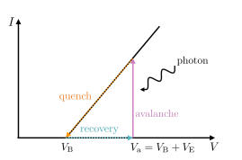
إن SPAD (المعروف أيضًا باسم فوتوديود انهياري في نمط غايغر) هو وصلة p-n منحازة عكسيًا عند جهد يتجاوز جهد الانهيار بمقدار يسمى الانحياز الزائد:
| (30) |
يمكن لفوتون ممتص في السيليكون أن يولد زوج إلكترون-فجوة. فإذا حُقن الحاملان في ما يسمى منطقة الاستنزاف (أو التكثير)، تسارعا بفعل حقل كهربائي قوي (أكبر من V/cm)، بحيث إن حاملًا ضوئي التولد واحدًا قد يطلق تكاثرًا انهياريًا متباعدًا ذاتي الاستدامة لحاملات الشحنة عبر التأين بالتصادم.
تعمل SPADs فوق جهد الانهيار، بخلاف APDs العادية (الفوتوديودات الانهيارية) التي تعمل بانحياز عكسي تحت جهد الانهيار [24]. ويعني التشغيل في هذا النمط أن التيار يتناسب مع عدد الفوتونات الممتصة، على الرغم من أن الكسب المحدود (حتى ) لا يسمح بكشف فوتونات مفردة [24]. وعلى العكس، تكون SPADs حساسة للفوتونات المفردة، لكنها لا تستطيع التمييز إلا بين صفر فوتونات وأكثر من صفر فوتونات، أي إنها ليست أجهزة قادرة على حل عدد الفوتونات [25]. ولذلك، بينما يمكن النظر إلى APD على أنه كاشف بمضخم مدمج، يمكن اعتبار SPAD كاشفًا بقلاّب رقمي [24].
نظرًا إلى قدرة SPADs على كشف الفوتونات المفردة، فإنها مفضلة على APDs كحساسات ضوئية في الهالوسكوبات العازلة. بالنسبة إلى APDs العادية، يكفي إزالة أي ضوء ساقط لإيقاف عملية التكثير فورًا. أما في حالة SPADs، فبمجرد بدء الانهيار سيستمر حتى في غياب الضوء. ولإيقاف السلسلة، يجب خفض جهد الانحياز إلى قيمة دون جهد الانهيار عبر مسار عالي الممانعة. ويتحقق ذلك من خلال ما يسمى دارة الإخماد. ويمكن رؤية دور هذه الدارة في الشكل 5، الذي يبين نمط التشغيل النموذجي لـ SPAD.
يعتمد جهد الانهيار في SPAD اعتمادًا قويًا على درجة حرارة وصلة p-n، إذ يتناقص مع انخفاض درجة الحرارة [23]. لذلك، من الحاسم تثبيت درجة الحرارة بدقة أثناء التشغيل: فإذا تغيرت درجة الحرارة مع إبقاء ثابتًا، فسيتغير الجهد الزائد و كذلك. وهذا مهم لأن كلًا من معدل العدّات المظلمة (DCR) وكفاءة الكشف الضوئي للجهاز يعتمدان على الجهد الزائد المطبق، وبناءً على ذلك يعتمد معدل العدّات المظلمة على درجة الحرارة. وتتحدد درجة الاستقرار الحراري اللازمة بحسب الحساس المحدد، وتعطى بميل مخطط “جهد الانهيار مقابل درجة الحرارة”. وتناقش عملية تثبيت درجة الحرارة والحساسية في إعدادنا في القسم V.1.
تشير العدّات المظلمة إلى نبضات موجودة حتى في غياب الضوء الساقط، وهي تتولد بفعل آثار حرارية. وتمثل هذه العدّات المصدر الرئيس للضجيج في الحساس الضوئي. وتسهم ثلاثة آثار في مثل أحداث الكشف الكاذبة هذه [51, 24, 13, 23]:
-
•
التحرر الحراري للشحنات. يمكن أن تتولد هذه الشحنات داخل منطقة الاستنزاف، حيث تستطيع إطلاق انهيار فورًا، أو في المنطقة غير المستنزفة، حيث يمكنها بالانتشار الوصول إلى منطقة الحقل العالي وبدء السلسلة. إن التوليد الحراري للحاملات من نطاق إلى نطاق نادر بسبب كون طاقة فجوة النطاق في السيليكون . والأكثر شيوعًا هو الانبعاث الحراري المعزز للإلكترونات عبر المصائد. في هذه العملية تعتمد الإلكترونات على مستويات طاقة مصائد وسط الفجوة، التي تنشأ من الشوائب أو العيوب البلورية، لعبور حاجز الجهد (توليد حراري بمساعدة المصائد) أو للنفاذ عبره (توليد حراري عبر نفقية بمساعدة المصائد) إلى نطاق التوصيل.
-
•
النفقية من نطاق إلى نطاق والنفقية بمساعدة المصائد من نطاق إلى نطاق داخل منطقة الاستنزاف. وعند درجات الحرارة المنخفضة يكون هذا هو الإسهام الأكبر في الضجيج المظلم.
-
•
نبضات مظلمة ثانوية تسببها آثار ما بعد النبض. فأثناء الانهيار يمكن أن تُحتجز بعض الحاملات في مستويات عميقة44 4 تعد شوائب الفلزات الانتقالية مصدرًا شائعًا للمستويات العميقة [24]. في منطقة الاستنزاف ثم تُطلق لاحقًا. ويمكن لتقنية التصنيع أن تكبح ما بعد النبض بدرجة كبيرة.
ولخفض الإسهام الحراري في معدل العدّات المظلمة، يمكن تبريد SPAD بواسطة خلية Peltier.
ومن المعلمات المهمة الأخرى في توصيف SPAD كفاءة كشفه للفوتونات، أي النسبة بين عدد الفوتونات الساقطة وعدد نبضات التيار الخارجة [62]. وتعطى PDE بـ
| (31) |
حيث هي الكفاءة الكمومية55 5 يمكن قياس الكفاءة الكمومية باستخدام مصدر ضوئي معاير مع تشغيل SPAD في النمط الخطي. و هو احتمال أن يبدأ زوج الإلكترون-الفجوة الأولي المتولد ضوئيًا انهيارًا. وفي حين تضم الكفاءة الكمومية الاعتماد على طول موجة الفوتون الساقط ()، يحمل الاعتماد على الجهد الزائد ودرجة الحرارة 66 6 الاعتماد على درجة الحرارة ضعيف جدًا فوق . التي يعمل عندها SPAD.
يأخذ في الحسبان احتمال أن يعبر الفوتون طبقة مضادة الانعكاس ثم يولد زوج إلكترون-فجوة في المنطقة الحساسة.
يعتمد على كل ما يحدث بعد ذلك. ولكي يخضع الحامل للتكثير، يجب أن ينتشر إلى منطقة الاستنزاف (ما لم يكن قد تولد فيها) من دون أن يعيد الاتحاد، وبمجرد دخوله منطقة الاستنزاف قد يطلق انهيارًا (انظر الشكل 6). ويعتمد انتشار الفجوات والإلكترونات على اختلاف حركيتها داخل الشبكة، وعلى أعمارها (التي يمكن أن تختلف كثيرًا تبعًا لنقاوة السيليكون)، وعلى درجة حرارة الوصلة. وأخيرًا، تزداد فرصة أن يطلق الفوتون سلسلة انهيار مع ازدياد الجهد الزائد، وذلك على حساب ارتفاع معدل العدّات المظلمة. ولمزيد من التفاصيل حول كفاءة كشف الفوتونات في SPADs، نقترح الرجوع إلى المراجع [52, 61, 35, 48, 62, 24, 23].
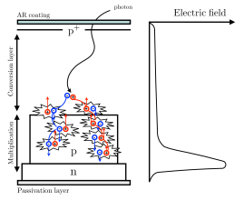
IV.3 التجميع

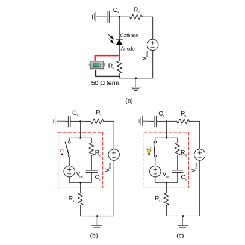
يتكون التجميع التجريبي من قفص بصري من Thorlabs مثبت على صفيحة قاعدة مصممة خصيصًا. ويحتوي القفص البصري على الرزمة العازلة فوق العدسة اللاكروية في حامل قابل للضبط (مزود بمقابض دقة دون المليمتر للتموضع في مستوى x-y، وأربعة قضبان يُركّب عليها القفص ويمكن أن ينزلق بحرية للتموضع على محور z). يثبت SPAD على صفيحة القاعدة بحيث يقع عند بؤرة العدسة اللاكروية، ولضمان محاذاة صحيحة، يضبط موضع العدسة في مستوى x-y باستخدام ديود ليزري أحمر مقترن بموازٍ للحزمة. ويُدخل الموازن في مهايئ صفيحة قفص من Thorlabs مركب مباشرة فوق حامل العدسة، بحيث يكون الضوء عموديًا تمامًا على العدسة. ولا تتحقق محاذاة العدسة على محور z من خلال تركيز الحزمة المذكورة من الديود الليزري فحسب، بل أيضًا من خلال تركيز جسم بعيد على القاعدة التي يُركب عليها الحساس الضوئي. وللتحقق من أن العدسة محاذاة على نحو صحيح مع SPAD، نسلط ضوءًا محيطًا على SPAD عبر منفذ بصري وليف متصل بمهايئ صفيحة القفص. وعند إزالة الليف، لا يرى SPAD أي ضوء، ما يتحقق من محاذاته الصحيحة.
تجهز وحدة Excelitas SPAD بمبرد كهروحراري (مباشرة تحت SPAD) وبمقاومة حرارية للسماح بتنظيم درجة الحرارة. ويوضع هذا الإعداد كله، الموضح في الشكل 7، داخل حجرة محكمة الضوء من الفولاذ غير القابل للصدأ لمنع تسرب الضوء.
تتحقق قراءة SPAD باستخدام دارة إخماد سلبية (PQC). وكما هو موضح في الشكل 8، فإن المكونات الأساسية لهذه الدارة هي مقاومة الموازنة ، وسعة شاردة (أي سعة إلى الأرض موصولة بواسطة إلى طرف الديود الموجب–المهبط)، ومقاومة قياس لتمكين قراءة الجهد على راسم الذبذبات (وهذه على التوالي مع إنهاء راسم الذبذبات ). ولتفهم PQC، يمكننا نمذجة SPAD كدارة RC ذات مقاومة ديود وسعة وصلة . وتكون سعة الوصلة هذه مشحونة عادة إلى جهد الانحياز . عندما يسقط الضوء على الحساس ويكون جهد الانحياز فوق جهد الانهيار، يبدأ الانهيار وتخزن نبضة الانهيار في . ويقابل إطلاق الانهيار انغلاق المفتاح في الدارة المكافئة للديود. عند تلك النقطة تفرغ شحنتها نزولًا إلى جهد الانهيار لمدة زمن الإخماد، الذي يحدده و على التوازي، والسعة الكلية [24]. عند هذه النقطة، يفتح المفتاح مرة أخرى وتُعاد شحن سعة الوصلة أسيًا حتى جهد الانحياز بثابت زمني . وفي نهاية فترة الاسترداد ، يصبح SPAD جاهزًا للكشف مرة أخرى.
IV.4 نظام DAQ
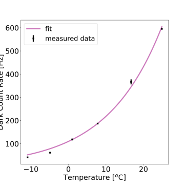
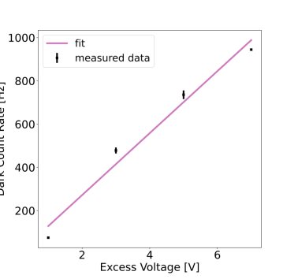
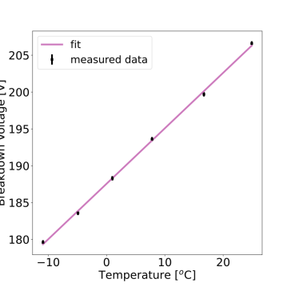
تُغذى مخرجات الإشارة ودرجة الحرارة من SPAD إلى نظام اكتساب البيانات (DAQ)، الذي يتيح لنا قياس عدّات SPAD وتنفيذ متحكم تناسبي-تكاملي-تفاضلي (PID) من أجل تنظيم درجة الحرارة.
يتكون DAQ من أجهزة معيارية من وحدات الأجهزة النووية (NIM). وتُستخدم وحدة N625 Quad Linear Fan In/Fan out لعكس الإشارات ونسخها عند الحاجة. ويجب عكس إشارة خرج SPAD لأن خرج دارتنا يعطي نبضة ذات حافة موجبة، في حين يعمل معيار NIM على نبضات ذات حافة سالبة. تدخل نسخة من الإشارة المعكوسة إلى مميّز نوع الحافة الرائدة N844 (LTD). يوفر هذا المميز حالة NIM منطقية عالية عندما تكون الإشارة دون عتبة مضبوطة (تذكّر أن الإشارات سالبة). وتُضبط العتبة في هذه التجربة عند ، وهي منخفضة بما يكفي لرفض ضجيج خط الأساس. وبما أن سعة النبضات المظلمة (أي النبضات المتولدة عندما لا يكون هناك ضوء ساقط) من رتبة ، فإن فقدان الإشارة مهمل تمامًا. ينتقل خرج المميز إلى وحدة المؤقت المزدوج N93B، ثم إلى وحدة N1145 Quad Scaler and Preset Counter Timer، التي تعد عدد نبضات NIM المنطقية العالية ضمن فترة زمنية معينة.
ولتنفيذ متحكم PID، يُستخدم مقياس متعدد من Keithley لقراءة درجة الحرارة من مقاومة SPAD الحرارية. ويُنفذ نص PID مكتوب باستخدام مكتبة PyVisa لتنظيم إعدادات PID وتسجيل بيانات درجة الحرارة لكل تشغيل.
V النتائج
V.1 توصيف SPAD
كما ذُكر في القسم II، اختُبرت ثلاثة SPADs لهذه التجربة. وبما أن بيانات Excelitas SPAD استُخدمت لإنشاء منحنى الاستبعاد النهائي، فإننا لا نعرض إلا توصيف هذا SPAD. كان لجهاز Hamamatsu معدلات عدّات مظلمة عالية للغاية ولم يُظهر سلوك SPAD المميز في نمط غايغر. أما SPAD من Laser Components فلم يكن مزودًا بـ TEC داخل علبته، ولم يثبت استخدام خلية Peltier خارجية أنه طريقة موثوقة للتبريد بسبب تقلبات درجة الحرارة البالغة .
يُعرض اعتماد معدل العدّات المظلمة (DCR) على درجة الحرارة لـ Excelitas SPAD في الشكل 9. ومثاليًا، لإبقاء DCR عند حد أدنى، ينبغي استخدام أدنى درجة حرارة عند تشغيل SPAD. غير أن الحفاظ على درجة حرارة مستقرة دون لفترات زمنية من رتبة ساعات تبين أنه صعب. لذلك شُغّل SPAD عند وجهد زائد ، وهما قيمتان سمحتا بتشغيل متسق ومستقر. وتمكنا من تحقيق استقرار حراري ضمن باستخدام إعداد التحكم PID، وهي هامش منخفض بما يكفي كي لا يدخل أخطاء في جهد الانهيار المقدر كما هو موضح في الشكل 9. وقد اتخذ قرار تشغيل SPAD عند فوق جهد الانهيار لضمان PDE عالية، والتي كما ذُكر تزداد مع ازدياد ، مع الحفاظ في الوقت نفسه على DCR منخفض. ويُعرض اعتماد DCR على الجهد الزائد عند في الشكل 9.
أثناء قياسات DCR، لاحظنا سلوكًا غريبًا تغير فيه DCR رغم إبقاء درجة الحرارة والجهد الزائد ثابتين. ولوحظ أنه عندما يحدث ذلك تكبر سعة الإشارة مع الزمن، ما يسمح لنبضات أكثر بعبور العتبة، ومن ثم زيادة المعدل المقاس. ويمكن أن يعزى تغير سعة الإشارة إلى تغير في جهد الانهيار رغم ثبات درجة الحرارة. وقد تأكد بالفعل أنه في كل مرة ينحرف فيها معدل العدّات المظلمة عن قيمته الاسمية، ينحرف جهد الانهيار كذلك، بالرغم من عدم تغير درجة الحرارة. وأشارت الشركة المصنعة لاحقًا إلى أن تغير DCR قد يرتبط بتأثير ثنائي الاستقرار أو متعدد الاستقرار، وهو معروف جيدًا في SiAPDs العاملة في نمط غايغر. ويقترح بعضهم أن هذا مرتبط بكثافة العيوب وتوزيعها في شبكة الحساس [26, 19]. ولمعالجة هذا العيب، نضمن بقاء سعة النبضات ثابتة طوال مدة اكتساب البيانات77 7 راسم الذبذبات حساس لتغيرات السعة ضمن ، في حين تسبب لااستقراريات الحساس انحرافات في السعة مقدارها أو أكثر. بمراقبة النبضات على راسم الذبذبات، مع استبعاد البيانات التي أظهرت مثل هذا السلوك الشاذ.
V.2 الحدود العليا المرصودة
أُجريت التجربة على مرحلتين: ما نسميه “قياس الإيقاف”، حيث تسجل العدّات من الهالوسكوب من دون الرزمة ()؛ و“قياس التشغيل”، حيث نشغل الهالوسكوب مع رزمته (). نحسب الحدود العليا عند مستوى ثقة باستخدام طريقة نسبة اللوغاريتم الاحتمالي الموصوفة جانبيًا، والمبينة في الملحق D.
أُخذت القياسات عند وجهد زائد . استمر “قياس التشغيل” () ساعتين، بينما استمر “قياس الإيقاف” 30 دقيقة (). وكما ذُكر في القسم III.2، كلما طال التعرض أثناء “قياس التشغيل” زادت نسبة الإشارة إلى الضجيج. ولسوء الحظ، كان زمن جمع البيانات محدودًا بالشذوذ الذي نوقش سابقًا، حيث كان جهد الانهيار يبدأ بالتغير. ولضمان عدم تغير جهد الانهيار أثناء أخذ القياسات، قُسم عد النبضات إلى تشغيلات مدة كل منها عشر دقائق، وقيس جهد الانهيار فيما بينها. واستُبعدت التشغيلات التي تغير فيها جهد الانهيار عن قيمته الاسمية. وكانت معدلات العد النهائية المرصودة و، وهي متسقة مع عدم رصد إشارة. والحد الأعلى المناظر على مجموعة البيانات المرصودة الوسيطة هو .
يعرض الشكل 11 الحد الأعلى المرصود عند 90% CL لمعامل المزج الحركي بوصفه دالة في طاقة الفوتون المظلم باستخدام عامل التعزيز المقاس. وتُعرض أيضًا الحدود العليا باستخدام المئينين 15th و85th من طيف عامل التعزيز كحزمة سوداء شبه شفافة. ويعرض الرسم نفسه أحدث القيود باستخدام حدود كونية وتجريبية وفلكية. وبما أن سماكات الطبقات في الرزمة المصنعة اختلفت عن السماكات الاسمية (أي النظرية المستخدمة أثناء عملية PECVD)، استُخدمت السماكات المقاسة لبناء الحد الأعلى المرصود عند مستوى ثقة 90%. ويحمل قياس سماكة الطبقات بعض الخطأ، ولذلك يلزم أيضًا تقدير خطأ في عامل التعزيز. تمكنا بالنسبة إلى معظم الطبقات من أخذ أربعة قياسات سماكة مميزة، باستخدام أربع عينات TEM مختلفة. أُخذت عينتان من الرزمة المستخدمة في تجربة الفوتون المظلم الفعلية، واثنتان من رزمة أخرى، وكلاهما صُنعتا في تشغيل PECVD نفسه في PoliFab. يختلف عامل التعزيز المصمم عن عامل التعزيز الحقيقي بسبب لايقين عملية تصنيع PECVD. إضافة إلى ذلك، يختلف عامل التعزيز المقاس عن العامل الحقيقي بسبب لايقين القياس. ومع ذلك، فعلى الرغم من أن عامل التعزيز المقاس ليس بديلًا مثاليًا عن الحقيقي، فإنه يقدم تمثيلًا جيدًا لجودة عوامل التعزيز الحقيقية التي يمكن إنتاجها عبر PECVD مقارنة بعوامل التعزيز المصممة التي نحاول إنشاءها. وعند إنشاء حدود من رزمتنا الحقيقية، فإن مجرد النظر في اللايقين عند كل نقطة كتلة هو تبسيط للايقين المترابط الحقيقي عبر الكتل، ومن الصعب جدًا تنفيذه كمعلمة إزعاج في الاستدلال. لذلك، نشير في هذه النتيجة إلى غلاف مقدر للخطأ الناجم عن خطأ قياس السماكات، إلى جانب الحد باستخدام عامل التعزيز المستند إلى السماكات المقاسة.
ولتقدير الخطأ في عامل التعزيز المعطى لايقين عرض كل طبقة، نجري سلسلة من محاكاة اللعب للرزمة بسماكات مسحوبة من توزيعات غاوسية ذات متوسط وانحراف معياري مطابقين للسماكة المقاسة ولايقينها. ويُعرض المئين من 15th إلى 85th لعامل التعزيز الناتج كحزمة رمادية في الشكل 10، ويُضمن الحد المقابل لهذا الغلاف في الشكل 11. ويتراوح عامل التعزيز الأقصى في المحاكاة بين و، مع نحو من قمم عامل التعزيز في المنطقة 1.4–.
وبما أن الخطأ في قياس سماكات الطبقات هو مصدر اللايقين السائد (مقارنة بمكونات لايقين دون سائدة مثل خطأ PDE، المعروف ضمن بضعة في المئة، أو خطأ محاذاة العدسة)، فقد يكون من الأفضل تحسين الرزم المستقبلية لا من أجل عامل تعزيز أعظمي، بل من أجل متانة أكبر تجاه الخطأ كما اقترح المرجع [4].
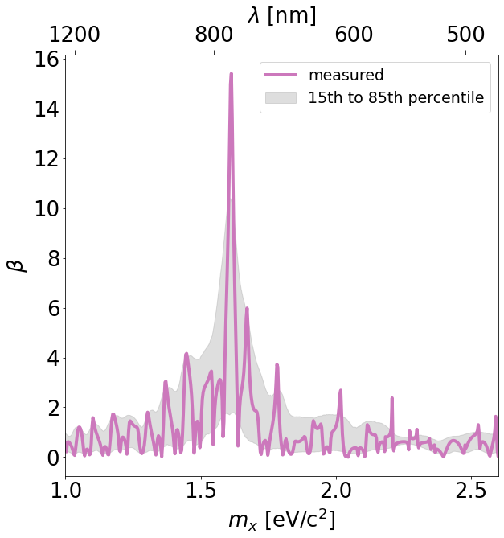
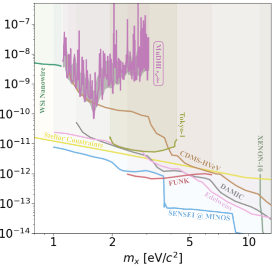
VI الخلاصة والآفاق المستقبلية
قدمنا تقريرًا عن تصميم MuDHI وبنائه وتوصيفه وتشغيله وتحليل بياناته ونتائجه. استخدم هذا الهالوسكوب العازل متعدد الطبقات النموذجي حساسًا ضوئيًا ميسور التكلفة ومتاحًا تجاريًا، هو SPAD، لكشف الفوتونات المظلمة. وللمرة الأولى، قُيمت جدوى تصنيع رزمة عازلة وتشغيلها بحيث تكون متدرجة السماكات وذات عدد كبير من الطبقات معًا. وطُورت خوارزمية لتحديد عدد الطبقات، وعامل التدرج، والسماكات الفردية من أجل تحسين الأداء النظري للرزمة. وقُطعت الطبقات الثنائية البالغ عددها 23 من SiO2 وSi3N4 بواسطة FIB ثم حُللت لاحقًا باستخدام TEM. واستخدمت هذه السماكات المقاسة مع لايقيناتها لتقييم طيف التعزيز الحقيقي للرزمة. وأُجري تقييم TEM تبريدي للرزمة بغمر الرقيقة في النيتروجين السائل، ولم يلاحظ أي ضرر واضح. وستكون هذه النتيجة مفيدة إذا شُغل الهالوسكوب بأكمله عند درجات حرارة تبريدية في التطويرات اللاحقة للتجربة.
نُفذت التجربة على خطوتين، إحداهما مع الرزمة (“قياس التشغيل”)، والأخرى من دون الرزمة (“قياس الإيقاف”). ومع “قياس تشغيل” مدته ساعتان، وبعد التصحيح لكفاءة الكشف الضوئي لـ SPAD وكفاءة الجمع عند البؤرة المستخرجة من محاكاة GEANT4، لم يُرصد أي فائض في الإشارة. وبناءً على ذلك، وُضعت قيود على ثابت اقتران المزج الحركي بين الفوتونات المظلمة والفوتونات العادية عند مستوى ثقة 90% في منطقة الكتلة التي يكون الكاشف حساسًا لها، مع حد أدنى قدره بلغ عند .
بسبب الفارق بين السماكات المصممة والمقاسة، يختلف طيف التعزيز الفعلي اختلافًا كبيرًا جدًا عن ذلك المستنتج نظريًا. ولهذا السبب سنعمل في النسخة التالية من الرزمة على تحسين المتانة بين عامل التعزيز المصمم والمقاس، بدلًا من السعي إلى تعظيمه فقط. ولتحقيق ذلك، نخطط لاستخدام ركيزة ذات استواء أعلى ومواصفة خدش-نقر أفضل، ولاستخدام آلة PECVD مجهزة لـ SE موضعي لتصنيع الرزمة. كما نخطط لاستخدام SE خارج الموقع (كما ورد في المرجع [31]) وTEM بعد الترسيب لمقارنة المنهجيتين. ومن المعلمات الأخرى التي نتوقع قياسها الانعكاسية الفعلية لطبقة المرآة، والتي يمكن بعد ذلك إدراجها في المحاكاة. فضلًا عن ذلك، ستُدرس الآثار المنهجية المحتملة الناتجة عن الآثار ثلاثية الأبعاد والعيوب لتوصيف استجابة الرزمة على نحو أفضل.
نظرًا إلى لااستقرار SPAD ومعدل العدّات المظلمة العالي نسبيًا، ستشهد المرحلة الثانية من التجربة تنفيذ حساس فائق التوصيل من نوع حافة انتقالية سيطوره متعاونون في INRiM (Istituto Nazionale di Ricerca Metrologica, Torino, Italy). وستُحفظ درجة حرارة الانتقال دون من أجل الحصول على دقة طاقية جيدة. وسيسمح معدل العدّات المظلمة الأخفض (المتوقع أن يكون نحو Hz) وقدرة TES على التمييز بين فوتون واحد وفوتونين أو أكثر (مما قد ينشأ، على سبيل المثال، من تفاعل ميون داخل TES) للتجربة باستكشاف مناطق في فضاء المعلمات ذات اقترانات مزج أضعف. وإذا بقي كل شيء على حاله باستثناء معدل العدّات المظلمة (أي طيف عامل التعزيز، والكفاءة الكمومية، وكفاءة الجمع، وزمن التعرض كما في MuDHI)، نتوقع أن تتحسن الحساسية بنحو 1000 عند قمة عامل التعزيز. وبما أن TES سيكون قادرًا على العمل باستقرار أكبر، فإننا نتوقع أيضًا أن يكون زمن الاكتساب من رتبة (10 يومًا) في ثلاجة تخفيف بلا مواد تبريد، بحيث إن تحسن عامل 1000 في الحساسية يمثل تقديرًا محافظًا للغاية.
Acknowledgements.
كان الاتصال الأولي مع Dr Ken Van Tilburg لا غنى عنه في إثارة اهتمامنا بكشف الفوتونات المظلمة باستخدام الهالوسكوبات العازلة. وكان Dr Masha Baryakhtar وDr Junwu Huang وDr Robert Lasenby أساسيين في تطوير الكاشف، وقد كانت ورقتهم “Axion and hidden photon dark matter detection with multilayer optical haloscopes” [15] مفيدة جدًا في المرحلة الأولى من هذا العمل. نحن ممتنون لـ Dr Alessia Allevi وDr Maria Bondani على الحوار المثمر حول حساسات كشف الفوتون المفرد في نوفمبر 2018. ونشكر Jean-Matthieu Bromont، مهندس المبيعات في Hi-Tech Detection Systems الشريك لـ Excelitas Technologies، الذي كان متاحًا دائمًا للدعم والمشورة طوال المشروع. كما نشكر بصدق Jens Krause وPhilippe Bérard من Excelitas Technologies على توجيهاتهما واقتراحاتهما. ولتَصنيع الرزمة، نشكر Dr Andrea Scaccabarozzi وDr Claudio Somaschini في PoliFab. وبالنسبة إلى التحليل الإحصائي، نعرب عن امتناننا لـ Dr Giacomo Vianello، الذي، قبل مغادرته الأوساط الأكاديمية إلى مسار ناجح في علم البيانات، نقل إلينا معرفته بدلالة الفائض في تجارب العد. ونشكر Jinumon Govindan، فني الورشة لدينا في NYUAD، الذي بنى بمهارة الأجزاء الميكانيكية اللازمة للتجربة. دُعم هذا العمل من صندوق NYUAD Research Enhancement Fund. ويدعم Alex Millar مجلس البحوث الأوروبي ضمن المنحة رقم 742104، ويدعمه مجلس البحوث السويدي (VR) تحت Dnr 2019-02337 “Detecting Axion Dark Matter In The Sky And In The Lab (AxionDM).” ويدعم Knut Dundas Morå مؤسسة National Science Foundation ضمن الجائزة رقم 1719286. وأخيرًا وليس آخرًا، أصبح هذا العمل ممكنًا بفضل الخبرات المتنوعة لمؤلفيه واستعدادهم لمشاركة معارفهم. وكما يحدث غالبًا، فإن التعاون الفعال والعمل الجماعي هما حجر الزاوية في الإنجاز العلمي.Appendix A اشتقاق صيغة المعدل المتوقع
في هالوسكوب عازل، تتضخم القدرة كمربع عامل التعزيز (انظر المعادلة (24))
| (32) |
حيث يُدخل لحساب كفاءة الكاشف. ويشمل ذلك PDE عند الطول الموجي المحدد المدروس88 8 قدمت الشركة المصنعة PDE بوصفها دالة في الطول الموجي عند جهد زائد . وبدلًا من ذلك، يمكن الحصول على PDE بوصفها دالة في الطول الموجي بقياس طيف الكفاءة الكمومية، مع العلم أن PDE عند جهد زائد وعند هي 2.1%. وترد هاتان المعلومتان في ورقة بيانات الشركة المصنعة [27]. وكفاءة الجمع عند البؤرة المستخرجة من محاكاة GEANT4 ( في حالتنا). وباستخدام المعادلة (LABEL:eq:expectedrate)، يصبح فيض الفوتون المظلم
| (33) |
حيث افترضنا كثافة مادة مظلمة مقدارها 0.3 GeV/cm3. وعند بناء الحدود العليا، نحصل على عدد العدّات المتوافق مع فرضية العدم، ثم نحسب قيمة المستبعدة لقيمة معطاة عند كل طاقة للفوتون المظلم. لذلك، وباستذكار أن الفيض هو عدد أحداث في وحدة الزمن ووحدة المساحة
يمكننا الحصول على تعبير لثابت الاقتران الحركي للفوتون المظلم
| (34) |
Appendix B اشتقاق
لدالة معطاة ، يعطى المتوسط على مجال مستمر بـ
وعلى سطح كروي، يمكننا بالمثل أن نكتب لـ
تذكر أن هي الزاوية بين الاستقطاب للفوتون المظلم ومستوى السطح الفاصل، أي زاوية بين خط ومستوى، في حين أن هي الزاوية بين متجه الاستقطاب والمتجه العمودي على السطح.
عنصر المساحة السطحي المتناهي الصغر هو ومساحة سطح الكرة هي . ويمكن التحقق من أن
ومن ثم
Appendix C محاكاة GEANT4
من أجل تعزيز احتمال الكشف، حُسّن شكل العدسة ونوعها وموضعها لتعظيم كسر الفوتونات التي تصيب مساحة الحساس الضوئي الموضوعة عند مسافات بؤرية مختلفة. وعلى وجه التحديد، أجرينا التحسين استنادًا إلى البصريات الهندسية، ثم أتبعناه بمحاكاة GEANT4 لحساب كفاءة الجمع عند البؤرة بدقة أكبر، مع أخذ عيوب السطح والزيغانات وتوهين الضوء في الحسبان.
C.1 التحسين الهندسي
لتحسين شكل العدسة، نمذجناها رياضيًا في 2D باستخدام شرائح تكعيبية. وعلى وجه التحديد، نعرّف متتالية منتهية ومتزايدة بصرامة من النقاط حيث ، ثم نصل كل زوج متتالٍ من النقاط بكثيرات حدود تكعيبية بحيث و. ثم يُحل النظام للحصول على منحنى أملس معرّف على النحو الآتي:
وتنشأ معادلة متجهية للعدسة بتطبيق متجه إزاحة ، ومصفوفة دوران ، وعامل تحجيم على المتجه
من أجل إنشاء المعادلة البارامترية الآتية لسطح العدسة:
بهذه الصياغة يمكن الحصول على إطار Frenet-Serret (أي المماس ، والعمودي ، والثنائي العمودي للمنحنى أعلاه)، ومن ثم إجراء انتشار هندسي للأشعة عبر سطح العدسة المعلّم . وعلى وجه التحديد، وبافتراض شعاع وارد في الاتجاه ، يمكننا التنبؤ بتغير الاتجاه بحساب زاوية الانكسار من زاوية السقوط . ويعطى ذلك بـ
حيث و هما معاملا الانكسار الداخلي والخارجي بالنسبة إلى منحنى الحد، وتُستخدم حدود sign لحساب اتجاه الدوران بصورة صحيحة. ومن ثم يمكننا أخيرًا التنبؤ بالاتجاه المنحرف باستخدام
حيث هي الزاوية الحرجة، و هي مصفوفة دوران عكس اتجاه عقارب الساعة.
والآن بعد أن صار لدينا نموذج رياضي لسطح العدسة قابل للضبط باستخدام مجموعة نقاط التحكم ، يمكننا كتابة برنامج يطلق أشعة متوازية عمودية على العدسة ويحسن موضع نقاط التحكم من أجل تصغير البقعة البؤرية ضمن مجال مسافات محدد. وعلى وجه التحديد، تحدد دالة الكلفة المراد تصغيرها على النحو
حيث هو المتجه الذي يحتوي إحداثيات نقاط التحكم في ، و هو كسر الأشعة التي تصيب حساسًا ضوئيًا عند الموضع من العدد الكلي للأشعة المرسلة بعد مرورها عبر عدسة ذات معلمات . ولإجراء التصغير نستخدم خوارزمية تسمى التطور التفاضلي، وهي طريقة تكرارية تطورية لحل مسألة التصغير العالمية المقيدة. ونستخدم أيضًا تسريع العتاد لاستكشاف حجم أوسع في فضاء المعلمات.
أظهرت النتائج أن العدسة المثلى هي عدسة لاكروية ذات معدل كشف أعظمي . وحددنا أقرب عدسة لاكروية متاحة من Thorlabs ومضينا إلى اختبارها بمحاكاة GEANT4.
C.2 المحاكاة
بعد تحديد عدسة متاحة تجاريًا، حصلنا على نموذج CAD الخاص بها وبنينا محاكاة GEANT4 لحساب تقدير أفضل لمعدل سقوط الفوتونات على الكاشف الضوئي. وللقيام بذلك، نضع رزمة من 23 طبقات ثنائية، تتكون كل منها من SiO2 وSi3N4، مع السماكات الاسمية المتدرجة نفسها الموجودة في جهازنا التجريبي. وتسمح جميع الحدود بانعكاسات فصية مرآوية. ويُحلل كل سطح إلى سطوح دقيقة وفق نموذج UNIFIED ground، حيث تضاف زاوية عشوائية إلى زاوية انعكاس الشعاع، مسحوبة من توزيع غاوسي له rad.
يمتلك كل فوتون زاوية استقطاب عشوائية مسحوبة من توزيع موحد، ويُولد في أي مكان بين طبقات الرزمة، بطاقة ابتدائية مقدارها (حيث يبلغ طيف عامل التعزيز المقاس ذروته) ومركبة سرعة عمودية تعطي زاوية عشوائية من رتبة rad.
تُسند إلى كل مادة قيمة لمعامل الانكسار بوصفه دالة في طاقة الفوتون الساقط، ومنها يمكن حساب الانعكاسية لكل سطح فاصل باستخدام
| (35) |
حيث يشير و إلى معاملي انكسار مادتين متجاورتين. وبهذا النموذج نستطيع الحصول على تقدير أدق لمعدل سقوط الفوتونات على الكاشف، ويتبين أنه 71.8%. ويعرض رسم كسر الإصابات () عند البؤرة بوصفه دالة في الإزاحة عن البؤرة () في الشكل 12.
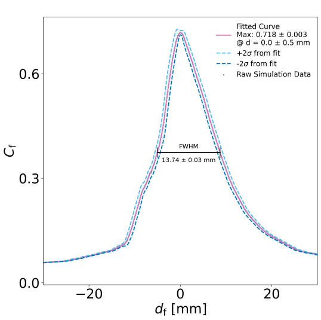
Appendix D كشف إشارة في تجربة العد لدينا
تُجرى التجربة على خطوتين، إما مع وجود الرزمة العازلة (“تشغيل”) أو مع إزالتها (“إيقاف”). نسمي النسبة بين الفترة الزمنية التي تجرى فيها “تجربة التشغيل” والفترة التي تجرى فيها “تجربة الإيقاف”، أي ، ونسمي العدّات في كل فترة و . وتفترض “تجربة الإيقاف” عدم وجود إشارة فوتون مظلم من دون الرزمة التي تتيح تحويلها.
هذه المقاربة التجريبية هي نفسها الموصوفة في [58]، أي كشف مصدر في تجربة عد. في هذا القسم سنعرّف إحصائية اختبار ونبني الحد الأعلى استنادًا إلى عدّات التشغيل والإيقاف المرصودة.
D.1 الحدود العليا لخلفية بواسونية
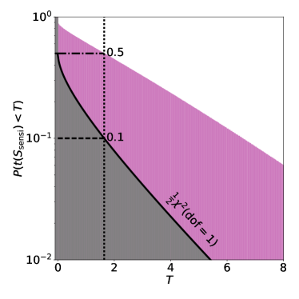
لإشارة متوقعة وتوقع خلفية في “قياس التشغيل”، تكون دالة الاحتمال الكلية:
| (36) |
حيث نستخدم توزيع عد بواسوني
| (37) |
ويُقيدان كل من و في الملاءمات ليكونا غير سالبين. وتعبّر نسبة الاحتمال الموصوفة جانبيًا عن التوافق بين أفضل ملاءمة والنموذج الذي تكون فيه هي شدة الإشارة الحقيقية:
| (38) |
حيث و هما قيمتا الإشارة والخلفية اللتان تعظمان دالة الاحتمال، بينما هو توقع الخلفية الذي يعظم دالة الاحتمال شرطيًا عند ثابت. وتعطى إحصائية اختبار نسبة الاحتمال التي نستخدمها للاستدلال بـ:
| (39) |
وبتوسيع هذا التعبير وتقييمه للفرضية نحصل على [45]
| (40) | ||||
قررنا مسبقًا أننا سنبلّغ عن نتيجة حد أعلى فقط لهذا البحث. ولذلك نضع عندما . علاوة على ذلك، يُقيد كل من و ليكونا غير سالبين في الملاءمة. ويمكن حساب أفضل ملاءمة لمعدلي الإشارة والخلفية تحليليًا. أفضل ملاءمة للإشارة هي
| (41) |
بينما أفضل ملاءمة للخلفية عند إشارة معطاة هي الجذر الموجب لـ
| (42) |
حيث
| (43) | ||||
ويعطي حل هذه إما لـ أو أفضل ملاءمة لـ أو الشرطية، على التوالي.
يتطلب حساب فترات الثقة مقارنة المحسوبة للبيانات التجريبية من أجل إشارة معينة ، بالتوزيع التراكمي ، أي دالة توزيع تحت فرضية أن الإشارة الحقيقية هي . ويؤدي حل من أجل S إلى الحد الأعلى على شدة الإشارة عند مستوى ثقة . يعرض الشكل 13 التوزيع (المعروض بوصفه ) لـ (أرجواني) و (أسود)، حيث هو الحد الأعلى الوسيط على الإشارة. وفي حد العينة الكبيرة، سيميل إلى توزيع نصف كاي-تربيع، كما تتنبأ مبرهنة Wilks [60]. ومن الشكل، يتضح أن هذا النظام يُبلغ عندما يكون الحد قريبًا من الحساسية التجريبية لفاصل ثقة .
References
- [1] (2020) Planck 2018 results-vi. cosmological parameters. Astronomy & Astrophysics 641, pp. A6. External Links: Document Cited by: §I.
- [2] (2018-08) First dark matter constraints from a supercdms single-charge sensitive detector. Physical Review Letters 121 (5). External Links: ISSN 1079-7114, Link, Document Cited by: Figure 11.
- [3] (2019-10) Constraints on light dark matter particles interacting with electrons from damic at snolab. Physical Review Letters 123 (18). External Links: ISSN 1079-7114, Link, Document Cited by: Figure 11.
- [4] (2020) Scalable haloscopes for axion dark matter detection in the 30eV range with RADES. JHEP 07, pp. 084. External Links: 2002.07639, Document Cited by: §V.2.
- [5] (2015-07) Direct detection constraints on dark photon dark matter. Physics Letters B 747, pp. 331–338. External Links: ISSN 0370-2693, Link, Document Cited by: §I, Figure 11.
- [6] (2013-10) New stellar constraints on dark photons. Physics Letters B 725 (4-5), pp. 190–195. External Links: ISSN 0370-2693, Link, Document Cited by: Figure 11.
- [7] (2020-08) Limits from the funk experiment on the mixing strength of hidden-photon dark matter in the visible and near-ultraviolet wavelength range. Phys. Rev. D 102, pp. 042001. External Links: Document, Link Cited by: Figure 11.
- [8] (2010-07) Liquid xenon detectors for particle physics and astrophysics. Reviews of Modern Physics 82 (3), pp. 2053–2097. External Links: ISSN 1539-0756, Link, Document Cited by: §I.
- [9] (2012-06) WISPy cold dark matter. Journal of Cosmology and Astroparticle Physics 2012 (06), pp. 13. External Links: Document Cited by: §I.
- [10] (2012) WISPy cold dark matter. Journal of Cosmology and Astroparticle Physics 2012 (06), pp. 013. External Links: Document Cited by: §III.
- [11] (2020-10) First germanium-based constraints on sub-mev dark matter with the edelweiss experiment. Physical Review Letters 125 (14). External Links: ISSN 1079-7114, Link, Document Cited by: Figure 11.
- [12] (2004-02) Comparative investigation of hydrogen bonding in silicon based pecvd grown dielectrics for optical waveguides. Optical Materials 8255201580, pp. 33–46. External Links: Document Cited by: §II.
- [13] (2010) Principles of semiconductor devices and heterojunctions. pp. 201–213. Cited by: §IV.2.
- [14] (2020-10) SENSEI: direct-detection results on sub-gev dark matter from a new skipper ccd. Physical Review Letters 125 (17). External Links: ISSN 1079-7114, Link, Document Cited by: Figure 11.
- [15] (2018-08) Axion and hidden photon dark matter detection with multilayer optical haloscopes. Physical Review D 98 (3). External Links: ISSN 2470-0029, Link, Document Cited by: §I, §III.1, §VI.
- [16] (1998) NEW physics discovery potential in future experiments. Modern Physics Letters A 13 (40), pp. 3235–3249. External Links: Document, Link Cited by: §III.2.
- [17] (2000) On the observability of a signal above background. Nucl. Instrum. Meth. A 452, pp. 518–524. External Links: Document Cited by: §III.2.
- [18] (2009-02) The Cryogenic Dark Matter Search (CDMS) experiment: Results and prospects. Journal of Physics: Conference Series 150 (1), pp. 012006. External Links: Document, Link Cited by: §I.
- [19] (1995) Identification of individual bistable defects in avalanche photodiodes. Applied physics letters 66 (18), pp. 2367–2369. External Links: Document Cited by: §V.1.
- [20] (2017-03) Dielectric haloscopes: a new way to detect axion dark matter. Physical Review Letters 118 (9). External Links: ISSN 1079-7114, Link, Document Cited by: §I.
- [21] (2021) Dark photon limits: a handbook. Physical Review D 104 (9), pp. 095029. External Links: Link Cited by: §I, §III.2, §III.
- [22] (2021) First Constraints on Dark Photon Dark Matter with Superconducting Nanowire Detectors in an Optical Haloscope. External Links: 2110.01582 Cited by: §I.
- [23] (1996-04) Avalanche photodiodes and quenching circuits for single-photon detection. Applied Optics 35 (12), pp. 1956. External Links: Document, ISSN 0003-6935, Link Cited by: §IV.2, §IV.2, §IV.2.
- [24] (2013) Chapter 4 - Semiconductor-Based Detectors. In Single-Photon Generation and Detection, A. Migdall, S. V. Polyakov, J. Fan, and J. C. Bienfang (Eds.), Experimental Methods in the Physical Sciences, Vol. 45, pp. 83–146. External Links: ISSN 1079-4042, Document, Link Cited by: §IV.2, §IV.2, §IV.2, §IV.3, footnote 4.
- [25] (2011) Invited review article: single-photon sources and detectors. Review of Scientific Instruments 82 (7), pp. 071101. External Links: Document, Link, https://doi.org/10.1063/1.3610677 Cited by: §IV.2.
- [26] (2018) Random Telegraph Signal in Proton Irradiated Single-Photon Avalanche Diodes. IEEE Transactions on Nuclear Science 65 (8), pp. 1654–1660. External Links: Document Cited by: §V.1.
- [27] Excelitas C30902SH-TC Si APD Datasheet. Note: [Online] External Links: Link Cited by: Figure 9, footnote 8.
- [28] (2021) The physics of the dark photon. SpringerBriefs in Physics. External Links: ISBN 9783030625191, ISSN 2191-5431, Link, Document Cited by: §I.
- [29] (2020) Probing dark photons with plasma haloscopes. Phys. Rev. D 102 (4), pp. 043003. External Links: 2006.06836, Document Cited by: §III.1, §III, §III.
- [30] Si APD S12426 series datasheet. Note: [Online] External Links: Link Cited by: §II.
- [31] (2019) Spectroscopic ellipsometry characterization of multilayer optical coatings. Surface and Coatings Technology 357, pp. 114–121. Cited by: §IV.1.2, §VI.
- [32] (2019-10) Detecting sub-gev dark matter with superconducting nanowires. Physical Review Letters 123 (15). External Links: ISSN 1079-7114, Link, Document Cited by: Figure 11.
- [33] (1986) Two u (1)’s and ϵcharge shifts. Physics Letters B 166 (2), pp. 196–198. Cited by: §I.
- [34] (2013) Searching for WISPy Cold Dark Matter with a Dish Antenna. JCAP 04, pp. 016. External Links: 1212.2970, Document Cited by: §III.1, §III.1.
- [35] (2017) Analysis of single photon detection in avalanche photodetectors with multi-gain-stage multiplication region. Applied optics 56 (6), pp. 1631–1636. External Links: Document Cited by: §IV.2.
- [36] (2017) Axion-photon conversion caused by dielectric interfaces: quantum field calculation. JCAP 09, pp. 005. External Links: 1707.00701, Document Cited by: §III.1, §III.
- [37] (2013) An antenna for directional detection of WISPy dark matter. Journal of Cosmology and Astroparticle Physics 2013 (11), pp. 016. Cited by: §III.1, §III.
- [38] (2013) Resonant to broadband searches for cold dark matter consisting of weakly interacting slim particles. Phys. Rev. D 88 (11), pp. 115002. External Links: 1308.1103, Document Cited by: §III.1, §III.1, §III.1, §III.
- [39] (2012-10) Structural, compositional and optical properties of PECVD silicon nitride layers. Journal of Physics D: Applied Physics 45 (44), pp. 445301. External Links: Document, Link Cited by: §IV.1.
- [40] (2021) Simulating madmax in 3d: requirements for dielectric axion haloscopes. Journal of Cosmology and Astroparticle Physics 2021 (10), pp. 034. External Links: Document Cited by: §III.1.
- [41] (2018) Directional axion detection. Journal of Cosmology and Astroparticle Physics 2018 (11), pp. 051. External Links: Document Cited by: §III.
- [42] (2019) A first look on 3d effects in open axion haloscopes. Journal of Cosmology and Astroparticle Physics 2019 (08), pp. 026. External Links: Document Cited by: §III.1.
- [43] (2019) Tunable axion plasma haloscopes. Phys. Rev. Lett. 123 (14), pp. 141802. External Links: 1904.11872, Document Cited by: §III.1.
- [44] (2019-05) Computational study on silicon oxide plasma enhanced chemical vapor deposition (PECVD) process using tetraethoxysilane/oxygen/argon/ helium. Japanese Journal of Applied Physics 58 (SE), pp. SEED06. External Links: Document, Link Cited by: §II.
- [45] (1983-09) Analysis methods for results in gamma-ray astronomy. Astrophysical Journal 272, pp. 317–324. External Links: Document Cited by: §D.1.
- [46] (2020) MADMAX: A Dielectric Haloscope Experiment. In Journal of Physics: Conference Series, Vol. 1468, pp. 012062. External Links: Document Cited by: §I.
- [47] (2019) Proposal to Detect Dark Matter using Axionic Topological Antiferromagnets. Phys. Rev. Lett. 123 (12), pp. 121601. External Links: 1807.08810, Document Cited by: §III.1.
- [48] (2008) Quantum detection efficiency in geiger mode avalanche photodiodes. IEEE Transactions on Nuclear Science 55 (6), pp. 3620–3625. External Links: Document Cited by: §IV.2.
- [49] (2017) Dielectric haloscopes: sensitivity to the axion dark matter velocity. Journal of Cosmology and Astroparticle Physics 2017 (10), pp. 006. External Links: Document Cited by: §III.1, §III.2.
- [50] (2017) Dielectric Haloscopes to Search for Axion Dark Matter: Theoretical Foundations. JCAP 01, pp. 061. External Links: 1612.07057, Document Cited by: §III.1, §III.1, §III.1, §III.2.
- [51] (2020) Dark count rate modeling in single-photon avalanche diodes. IEEE Transactions on Circuits and Systems I: Regular Papers 67 (5), pp. 1507–1515. External Links: Document Cited by: §IV.2.
- [52] (2021) Modeling, simulation methods and characterization of photon detection probability in cmos-spad. Sensors 21 (17), pp. 5860. External Links: Link Cited by: §IV.2.
- [53] (1992) Quantum statistics in particle mixing phenomena. Phys. Rev. D 45, pp. 1782–1788. External Links: Document Cited by: §III.
- [54] (2021) Axion quasiparticles for axion dark matter detection. JCAP (08), pp. 066. External Links: 2102.05366, Document Cited by: §III.1.
- [55] (2019-08) A review: preparation, performance, and applications of silicon oxynitride film. Micromachines 10, pp. 552. External Links: Document Cited by: §II.
- [56] (2015-09) Experimental search for hidden photon CDM in the eV mass range with a dish antenna. Journal of Cosmology and Astroparticle Physics 2015 (09), pp. 042–042. External Links: Document, Link Cited by: Figure 11.
- [57] (2003-11) Stress investigation of PECVD dielectric layers for advanced optical MEMS. Journal of Micromechanics and Microengineering 14 (3), pp. 317–323. External Links: Document, Link Cited by: §IV.1.
- [58] (2018-05) The Significance of an Excess in a Counting Experiment: Assessing the Impact of Systematic Uncertainties and the Case with a Gaussian Background. The Astrophysical Journal Supplement Series 236 (1), pp. 17. External Links: ISSN 1538-4365, Link, Document Cited by: Appendix D.
- [59] (2017-08) III–V-on-Silicon Photonic Integrated Circuits for Spectroscopic Sensing in the 2–4 m Wavelength Range. Sensors 17, pp. 1788. External Links: Document Cited by: §IV.1.
- [60] (1938) The large-sample distribution of the likelihood ratio for testing composite hypotheses. The Annals of Mathematical Statistics 9 (1), pp. 60–62. External Links: Document Cited by: §D.1.
- [61] (2016) A new modeling and simulation method for important statistical performance prediction of single photon avalanche diode detectors. Semiconductor Science and Technology 31 (6), pp. 065024. External Links: Document Cited by: §IV.2.
- [62] (2007) Principles and features of single-photon avalanche diode arrays. Sensors and Actuators A: Physical 140 (1), pp. 103–112. External Links: Document Cited by: §IV.2, §IV.2.